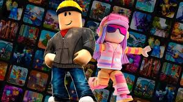
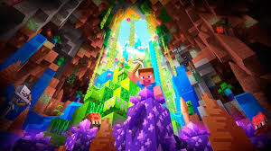
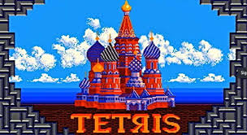

Los videojuegos
Bienvenido al Blog Gamer



Los videojuegos son aplicaciones interactivas de entretenimiento digital. Permiten a los jugadores vivir experiencias en mundos virtuales usando controles, teclados o pantallas táctiles.
Hoy en día los videojuegos son una forma de expresión artística y cultural que combina música, programación, diseño y narrativa.
El primer videojuego apareció aproximadamente en el año 1958* y desde entonces la industria no ha parado de crecer.
Muchos videojuegos están programados usando lenguajes como
C++, Java o C#.
Actualmente existen más de 3000 millones de jugadores en todo el mundo.